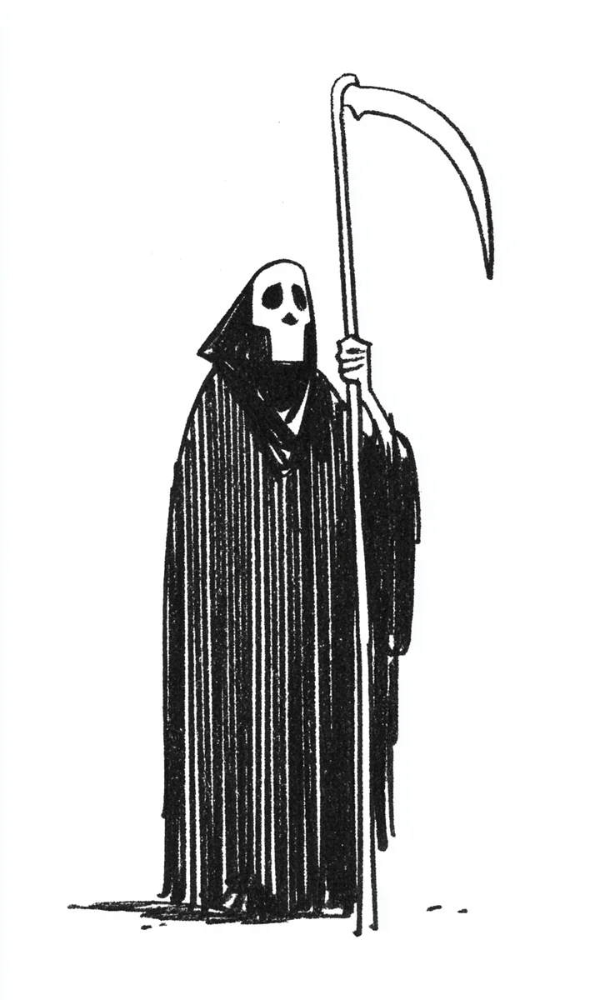

편의점 문이 “딩동” 하고 열렸어요.
[The convenience store door opened with a “ding-dong.”]
“어서 오세요...”
[”Welcome...”]
민수 씨는 하품을 크게 했어요. 시계는 새벽 네 시 십일 분이에요. 오늘도 손님이 거의 없었어요.
[Minsu yawned big. The clock read 4:11 AM. Today too there were almost no customers.]
검은 옷을 입은 키가 큰 남자가 천천히 들어왔어요. 손에는 아주 긴 낫을 들고 있었어요.
[A tall man dressed in black slowly came in. In his hand he was holding a very long scythe.]
“낫...이요?”
[”A... scythe?”]
민수 씨는 놀랐어요. 하지만 너무 졸려서 그냥 쳐다만 봤어요. 꿈인 줄 알았어요.
[Minsu was startled. But he was too sleepy so he just stared. He thought it was a dream.]
남자가 과자 진열대 쪽으로 걸어갔어요. 낫이 진열대를 “쾅!” 쳤어요. 과자 봉지들이 바닥에 우수수 떨어졌어요.
[The man walked toward the snack shelf. The scythe hit the shelf “bang!” Bags of snacks tumbled to the floor.]
“아이고, 죄송해요...”
[”Oh no, sorry...”]
남자가 또 하품을 했어요. 그리고 냉장고로 가서 에너지 드링크를 꺼냈어요. 한 개, 두 개, 세 개. 세 개나 꺼냈어요.
[The man yawned again. Then he went to the fridge and took out energy drinks. One, two, three. He took out three.]
“오늘 너무 피곤하길래 좀 사러 왔어요.”
[”I was so tired today, so I came to buy some.”]
“아... 네...”
[”Ah... okay...”]
민수 씨는 바코드를 찍었어요. 그리고 남자의 얼굴을 자세히 봤어요. 얼굴이 아주 하얗고, 눈 밑이 까맸어요. 옷에서 차가운 바람이 불었어요.
[Minsu scanned the barcode. Then he looked at the man’s face closely. His face was very white, and under his eyes was black. A cold wind blew from his clothes.]
가슴에 명찰이 있었어요. 이름은 “김사신.”
[There was a name tag on his chest. The name was “Kim Sashin.”]
“저기... 혹시... 진짜 사신이세요?”
[”Um... by any chance... are you really a reaper?”]
“네, 맞아요.”
[”Yes, that’s right.”]
김사신 씨는 주머니에서 종이를 꺼냈어요. 종이에 이름이 많이 적혀 있었어요.
[Kim Sashin took a paper from his pocket. Many names were written on it.]
“요즘 일이 너무 많더라고요. 하루에 스무 명이나 가야 해요. 어제도 스무 명, 그제도 스무 명이었어요.”
[”These days there’s just been so much work. I have to visit twenty people a day. Yesterday twenty, the day before twenty too.”]
“와... 힘드시겠어요.”
[”Wow... that must be hard.”]
“월급도 안 오르고요.”
[”And my salary doesn’t go up either.”]
김사신 씨는 에너지 드링크를 한 번에 다 마셨어요. 그리고 “크~” 했어요.
[Kim Sashin drank the energy drink all at once. Then he went “ahhh~.”]
“사실 지금 주소를 찾고 있었는데, 길을 잃는 바람에 여기까지 왔어요.”
[”Actually I was looking for an address, but I got lost and ended up here.”]
“다행이네요. 저한테는요.”
[”That’s a relief. For me, anyway.”]
김사신 씨가 웃었어요. 이빨이 없었어요.
[Kim Sashin laughed. He had no teeth.]
“농담 잘하시네요.”
[”You’re funny.”]
김사신 씨가 종이를 다시 봤어요. 그리고 민수 씨의 명찰을 봤어요. 그리고 종이를 또 봤어요.
[Kim Sashin looked at the paper again. Then he looked at Minsu’s name tag. Then he looked at the paper again.]
민수 씨의 심장이 빨라지기 시작했어요.
[Minsu’s heart started to speed up.]
“어...?”
[”Huh...?”]
“김민수 씨?”
[”Mr. Kim Minsu?”]
“...네?”
[”...Yes?”]
김사신 씨가 크게 하품을 했어요. 그리고 종이를 다시 주머니에 넣었어요. 낫을 어깨에 올렸어요.
[Kim Sashin yawned big. Then he put the paper back in his pocket. He put the scythe on his shoulder.]
“너무 피곤해서 오늘은 못 하겠어요. 내일 다시 올게요.”
[”I’m too tired so I can’t do it today. I’ll come back tomorrow.”]
“네...?”
[”What...?”]
문이 “딩동” 닫혔어요.
[The door closed “ding-dong.”]
민수 씨는 떨어진 과자들을 주웠어요. 손이 덜덜 떨렸어요.
[Minsu picked up the fallen snacks. His hands trembled.]
계산대 위에 이천 원이 놓여 있었어요. 그리고 작은 쪽지도 있었어요.
[Two thousand won was placed on the counter. And there was a small note too.]
쪽지에는 이렇게 적혀 있었어요.
[On the note, this was written:]
“내일 봐요.”
[”See you tomorrow.”]